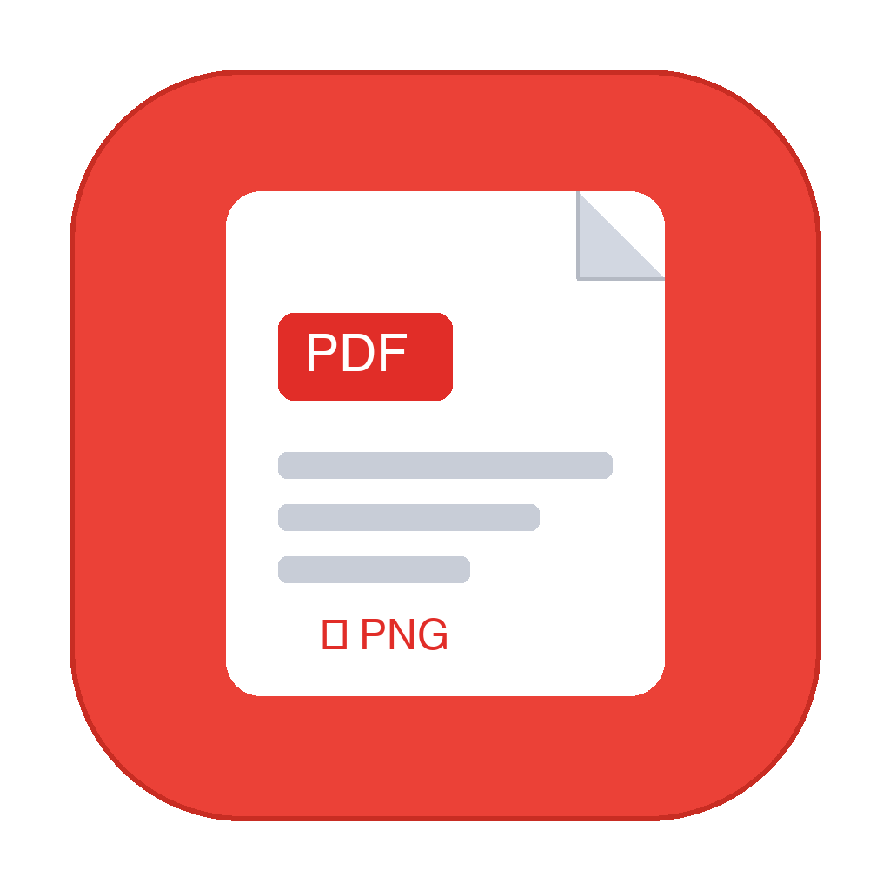

Drop
Drag one PDF, several PDFs, or drop them straight onto the app in the Dock.

PDF to Images for Mac
A tiny native utility that turns every page of a PDF into a clean, numbered PNG. It runs entirely on your Mac.
Requires macOS 12 or later · Apple silicon and Intel
Private by design
No upload step. No account. No analytics SDK. Conversion happens locally, so the document never needs to leave your machine.
Simple on purpose
Drag one PDF, several PDFs, or drop them straight onto the app in the Dock.
Pick 150, 300, or 600 DPI depending on whether you need screen, print, or extra detail.
Each document gets a numbered PNG folder on your Desktop, ready to use.
Built for macOS
No Electron shell, browser runtime, sign-in flow, or background service.
Objective-C and Cocoa compiled directly with Clang for fast launch and a minimal footprint.
Checks for the PDF header before processing instead of trusting a renamed file extension.
Creates output folders without overwriting existing files and cleans up partial results after a failed conversion.
Runs natively on both Apple silicon and Intel Macs.
Free and open source
Use Homebrew, or grab the latest DMG from GitHub Releases.
Download the DMGFirst launch, if macOS blocks the ad-hoc signed build: